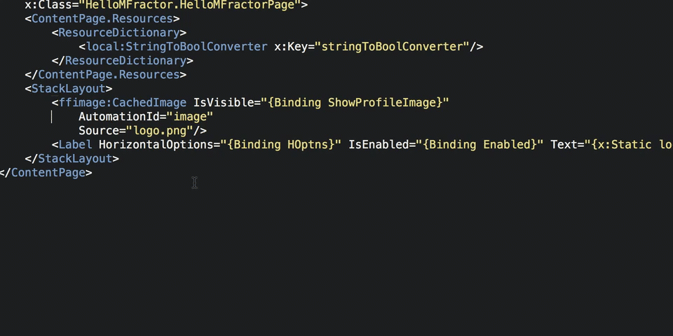

Organising Xaml Code
Tidy up your Xaml code with the expand, collapse and sort tools
Introduction
In this tutorial we'll go over the most useful Xaml organising refactorings. We'll cover MFractors Xaml formatting conventions, how to sort attributes and how to expand and collapse attributes and nodes.
These refactorings make it very easy to keep your Xaml organised and thus easier to understand.
Sorting Attributes
The Sort Attributes operation arranges a Xaml nodes attributes in order of namespace and name; this is great for keeping your Xaml tidy and easy to understand!
MFractor uses the following rules when sorting:
- Attributes that declare an xml namespace are ordered first, sorted alphabetically ascending. For example
xmlns:forms="http://xamarin.com/schemas/2014/forms"will appear beforexmlns:x="http://schemas.microsoft.com/winfx/2009/xaml". - Attributes that belong to the Microsoft Xaml schema
http://schemas.microsoft.com/winfx/2009/xamlare ordered next. For example, thex:Classorx:Namedeclaration. - Attributes belonging to the default namespace are ordered next, sorted alphabetically ascending.
- Attributes belonging to the other namespaces are then ordered next, sorted by namespace ascending and then by attribute name ascending.
To access the sort operation, right click on a Xaml node definition, select Organise and then Sort Attributes:

Expanding And Collapsing Attributes
We can use the following organise refactorings to arrange a xaml nodes attributes:
- Split attributes onto separate lines will breakout each xaml attribute onto it's own line, aligning themselves with a slight indentation from their parent node.
- Collapse attributes onto same line will move all attributes onto the same line as their parents opening tag.

Expanding And Collapsing Nodes
We can use the following organise refactorings to expand and collapse a Xaml node:
- Expand node into opening and clossing tag take a self-closing Xaml node (IE:
<Label />) and generate a closing tag for it (IE:<Label></Label>). - Collapse closing tag takes an empty node with a closing tag (IE:
<Label></Label>) and remove the closing tag, making the node self-closing (IE:<Label />).